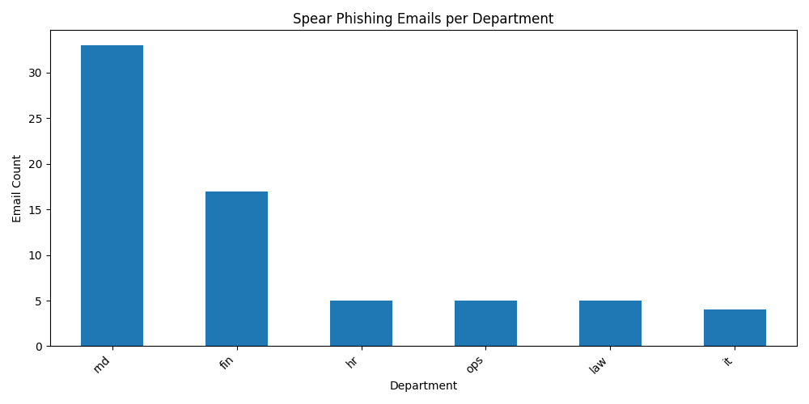

This project investigates spear phishing attempts targeting the fictional company CYFO INC. Email headers, content, and metadata were parsed and analyzed to identify potential threats and their origin.
2. Data Workflow
Parsing: EML files parsed into JSON structure
Cleaning: Normalized email addresses, timestamp formatting, and deduplication
Target Analysis: Identified messages directed to CYFO employees
Attribution: WHOIS IP lookup to determine attacker location and infrastructure
Visualization: Charts and HTML report generated
3. Targeted Employees & Departments
A total of 69 spear phishing emails were directed to known CYFO INC employees, spanning multiple departments.

4. Attacker Attribution
IP addresses extracted from email headers were resolved to hosting providers and geographic regions using WHOIS lookup.
5. Conclusions & Recommendations
Enforce SPF/DKIM/DMARC policies
Educate staff on spear phishing recognition
Block malicious IPs via email gateway or firewall
Automate header analysis in future incident response